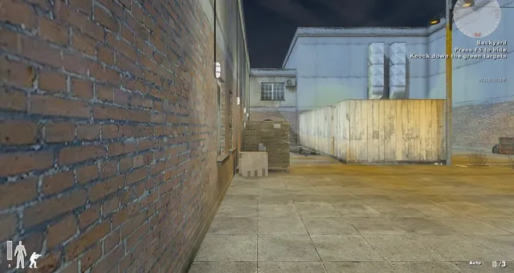
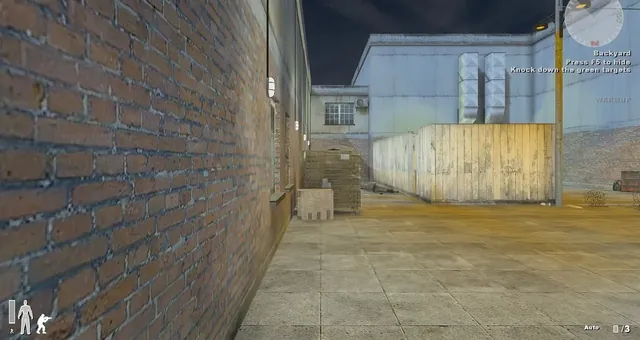
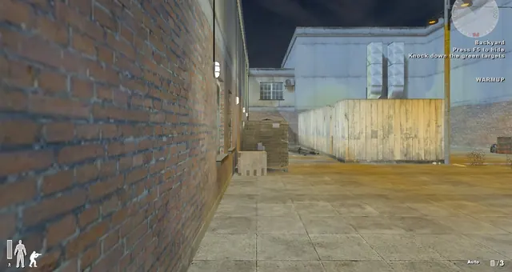

Media
Screenshots
Chaque image de cette page est capturée en jeu avec le moteur de rendu DirectX 12. Aucune retouche.






Presse et créateurs
Ouvrir le kit presse
Besoin de ces images en pleine résolution ?
Le kit presse contient des captures sans perte, le logo et une fiche d'information. Utilisez-les librement dans vos tests, vidéos et streams.